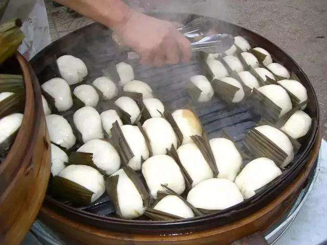

叶儿粑是乐山的传统名小吃，也是乐山人在这岁末时节最具有代表意义的传统年味符号之一。目前，叶儿粑（泡粑、冻粑）的包装和储存方式都有很大进步，我市的叶儿粑小吃类生产开始形成产业化，走向川内外的广阔市场，深受人们喜欢。

传统的乐山叶儿粑制作对于工艺和选料都非常讲究，要达到三不沾，即“不沾口、不沾粑叶、不粘牙”。粑皮选取糯米和大米，按照合理的比例搭配，一般情况是糯米占大部分。叶儿粑主要有甜皮咸粑馅，白皮咸粑馅，芝麻粑馅，豆沙粑馅等口味。泡粑则是用大米浆发酵后加入小苏打、碱水、白糖裹粑叶蒸熟而成。冻粑是在泡粑的基础上多加了猪油和芝麻，深受消费者的喜爱。

不论是在现代化的工厂，还是普通的农家灶间，不管是标准化的生产，还是富有家的味道的传统工艺，叶儿粑对于乐山人早已超过了小吃本身。每当辞旧迎新之际，这道传统小吃与浓浓的亲情一起，化成那道家家户户最为醇厚的年味。